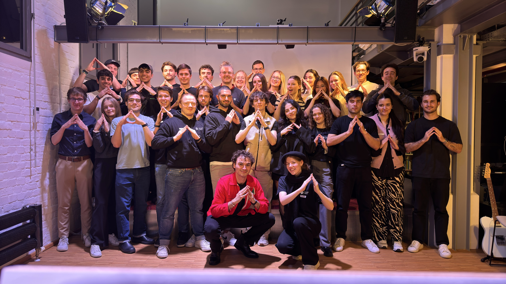
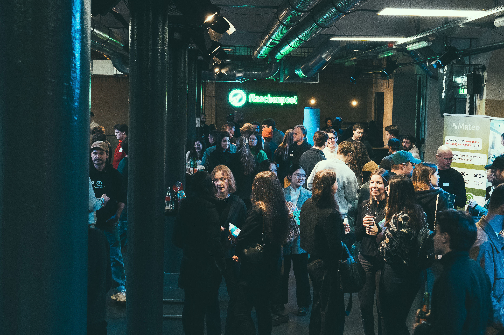
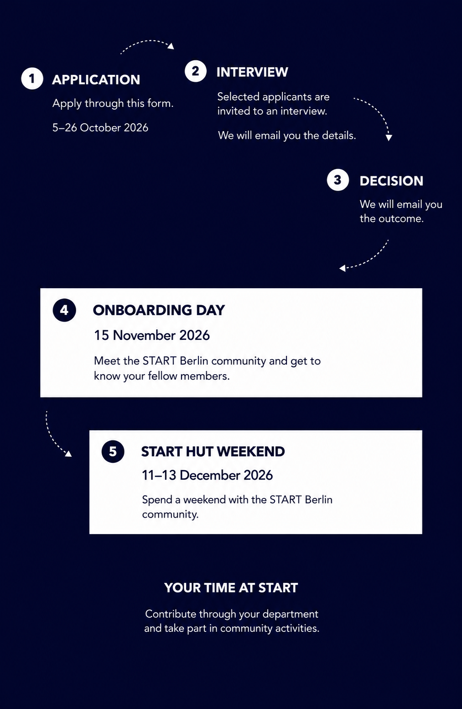
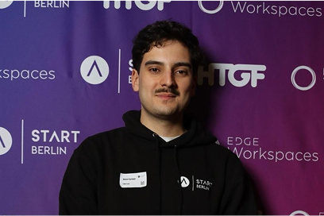
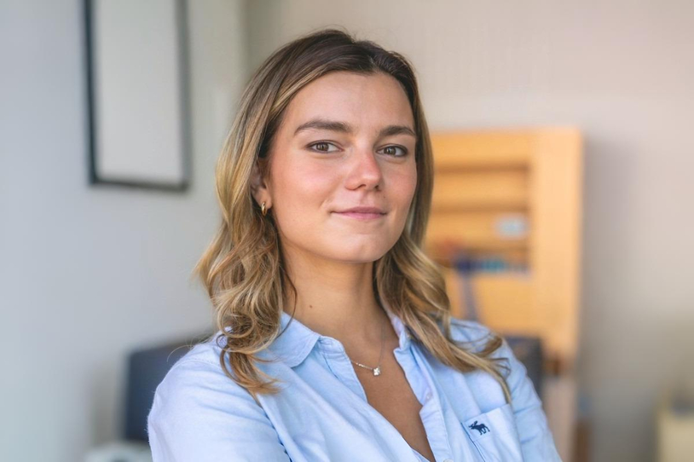

Events
Plan and run events that connect students with Berlin's startup ecosystem. Work with speakers and venues on founder talks and company visits.

Meet the people building Berlin's startup ecosystem. Join a student-run community where you contribute to projects and learn alongside fellow members.

Explore entrepreneurship with students who share your curiosity. Take responsibility in a department and help shape what START Berlin does.
Get to know fellow members and alumni. Find people to exchange ideas with or build something together.
Join startup and VC visits. Take part in workshops with people who have built companies and invested in them.
Organise events or develop our internal tools. Your department gives you a place to contribute and learn through practice.
Meet peers from other chapters across Europe and Latin America, with opportunities to take part in international START programmes.
Tell us about your motivation and upload your CV. Choose a short video or written answers. You will receive a confirmation email after submitting.
After screening, selected applicants are invited to an interview. We will email you the details.
We will email you the outcome of your application and the next steps.
Meet the START Berlin community and get to know your fellow members. Please keep this day free, as it is a mandatory event for new members.
Spend a weekend with the START Berlin community. We will share further details with selected applicants.

"START was the best learning environment I’ve ever been in. At 23, I led a team, made mistakes, and actually learned how to get things done—not just alone, but with others."

"START Berlin changed everything. I found a community of driven, like-minded people who inspired me to grow both personally and professionally. START opened doors I didn't know existed."

"START Berlin gave me so much value—not just during my time as a member, but long after. Through the community, I landed my first job and built lasting friendships here in Berlin."
Every member contributes through a department. Explore the teams and tell us where you would like to get involved.
Plan and run events that connect students with Berlin's startup ecosystem. Work with speakers and venues on founder talks and company visits.
Make START Berlin visible to students and the wider startup community. Create content and run campaigns for our events and application rounds.
Build the tools and processes that keep START Berlin running. Work on our website and internal systems, and make everyday work easier for our departments.
Help recruit new members and support them from application to onboarding. Organise community activities that bring our members together.
Connect START Berlin with startups and partners across Berlin's ecosystem. Develop collaborations for our events and maintain relationships beyond a single project.
No. You can apply if you are curious about entrepreneurship and want to contribute. You do not need an existing startup idea.
The application offers a short video or written answers. Both options are available, so choose the format that works for you. You will also be asked to upload your CV.
Selected applicants will receive their interview details by email. Keep an eye on your inbox after applying.
We ask you to contribute as an active member for one full year and be based in Berlin for at least the next six months. Your contribution depends on your department and projects, and we can discuss this in your interview.
If you need an adjustment to the application process, or have a question about your eligibility, email recruiting@start-berlin.com.
Tell us what motivates you to join and how you would like to contribute.
Questions? recruiting@start-berlin.com